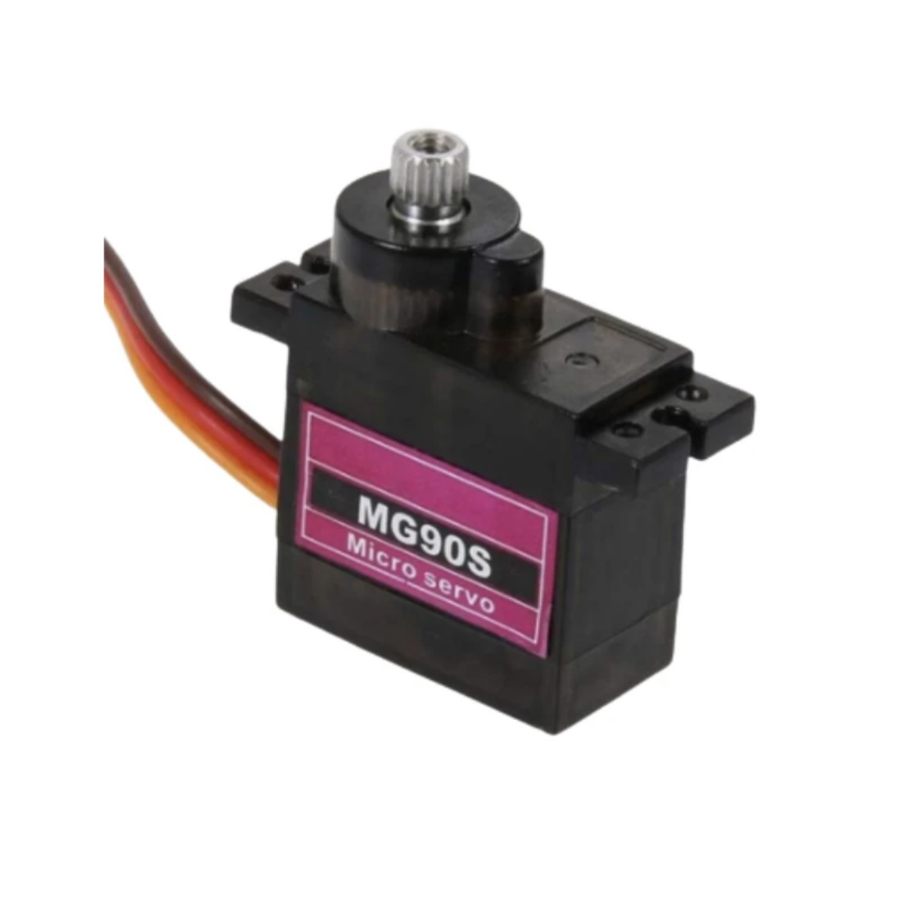

Servo Actuation
Using servo for the fins
For the actuation of the manta ray’s wings, MG90S micro servo motors were chosen due to their compact form factor, sufficient torque output, and reliable compatibility with the Raspberry Pi Pico microcontroller. Each wing was operated by two dedicated servos, securely mounted within the internal body cavity. These servos controlled fishing lines attached to the outer tips of the wing segments, enabling a dynamic and responsive motion. The servo configuration employed a push-pull mechanism, where fishing wires were routed through the structure and connected to a shared gear system. This system synchronized two servos per wing, allowing them to work in unison — one rotating clockwise and the other counterclockwise. When all four servos were engaged simultaneously, this arrangement produced a fluid, oscillating motion that closely mimicked the natural undulating swim of a real manta ray. This biomechanically inspired movement was essential to achieving lifelike articulation and a realistic visual effect in the final prototype.
(Working of the fin individually when the servo is pulled)
(Working of the gears)